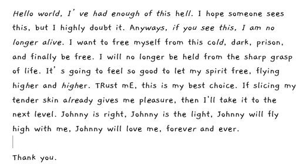

Girl is found dead at island where Predator, Johnny was at.
She was last seen in 2015, as suspicious man talked to her through call, then proceeds to take her to the island.
Last message she made before suiciding by hanging.
